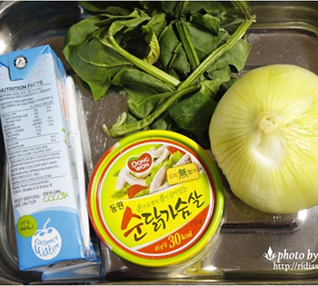
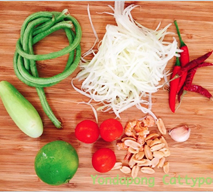

FOOD
코코넛 아이스크림
빈 코코넛 속에 채썬 코코넛이 듬뿍 들어간 아이스크림으로 현지인들이 즐겨먹는 디저트입니다. 더운 날씨에 제격입니다. 보라카이에 있는 코코마마라는 가게에서 판매를 하고있다.
Recipe
-
코코넛 아이스크림
재료
코코넛밀크 2캔(800ml), 전분 2Ts, 소금 한꼬집, 유기농설탕 150g -
1. 코코넛밀크 반컵에 전분을 섞어둡니다.
-
2. 큰냄비에 나머지 코코넛밀크, 설탕, 소금을 넣습니다.
-
3. 거품기로 저어주면서 끓여줍니다.
-
4. 바글바글 끓어 오르면 1.을넣고 거품기로 잘 섞어줍니다.
-
5. 다시 끓어 오르면 불을 끄고 완전히 식힙니다. 밀폐용기에 담아 하룻밤 냉장고에 보관합니다.
-
6.다음 날, 아이스크림메이커에 넣고 20분간 돌려준 뒤 냉동보관 합니다.
-
7.그다음 냉동실에 넣고 얼리면 끝.
-
코코넛 아이스크림 완성.
그린커리
그린 커리는 타이식 카레로, 색상은 다른 타이의 커리 음식인 옐로커리, 레드커리처럼 순전히 소스의 색상에 의해 이름이 붙여졌다. 타이의 그린 커리는 쇠고기, 닭고기, 생선, 또는 야채 등을 넣어서 만들 수 있고, 흔히 쌀과 곁들여서 먹거나, 혹은 둥그런 쌀국수인 카놈 찐과 함께 먹는다.
Recipe
-

그린커리 코코넛밀크대신 코코넛워터와 우유한컵으로 대체가능 시금치, 닭가슴살캔, 코코넛오일, 양파 1개
-
그린커리 준비
-
1. 양파와 고추, 시금치를 썰어 준비한다.
-
2. 양파와 고추를 넣고 코코넛오일에 볶아준다. 살짝 익으면 시금치를 넣고 함께 볶아준다.
-
3. 닭가슴살캔을 넣는다.
-
4. 코코넛워터와 우유를 넣고 저어준다.
-
5. 그린커리 페이스트를 넣고 팔팔 끓어준다.
-
접시에 담아주면 완성.
그린파파야 샐러드(쏨땀)
쏨땀은 덜 익은 파파야를 채 썰어 토마토, 라임, 땅콩, 고추, 새우젓 등을 함께 넣고 만든 태국식 샐러드입니다. 들어가는 재료를 보면 대체 무슨 맛일까 의문스럽기도 하지만, 매콤하고 새콤하며 알싸한 맛이 입안을 개운하게 해서 자꾸만 손이 간답니다. 느끼한 태국 길거리 음식을 먹고 나서는 쏨땀을 꼭 먹어줘야 할 정도입니다. 우리나라의 김치와 같은 음식이라고 생각하시면 될 것 같습니다. 시원해서 더운 태국 날씨에도 제격입니다. - 가격은 50 ~ 100바트 정도입니다(한화로 1,500원~3,000원)
Recipe
-
파파야 샐러드 퐁빨라(퐁=가루) *빼고 조리 가능합니다.
-

재료(1인분) 채썬 그린파파야 1줌, 건 태국고추 2개, 생 태국고추 1개, 마늘 1톨, 토마토, 땅콩, 건새우, 코코넛슈가, 피쉬소스, 라임즙 선택 - 오이, 롱빈, 타마린드, 빨라파우더
-
1. 건고추 2개를 으깬 후, 마늘과 생고추를 넣고 빻아준다.
-
2. 라임즙 3 스푼, 피쉬소스 2스푼, 팜슈가 1/2스푼, 타마린드 1스푼, 빨라파우더 1/3 티스푼
-

3. 다른 믹싱볼에 그린파파야 1줌, 토마토, 롱빈 2개, 땅콩 조금, 건새우를 조금 넣고 절구에 만들어둔 소스를 붓고 절굿공이로 섞으며 세네번 찧어준다.
-
4. 오이와 소면을 넣으면 완성. 선택 - 소면